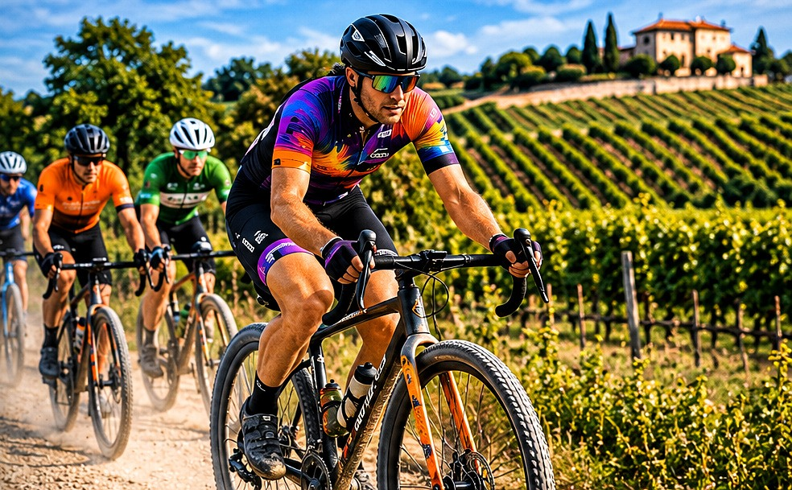
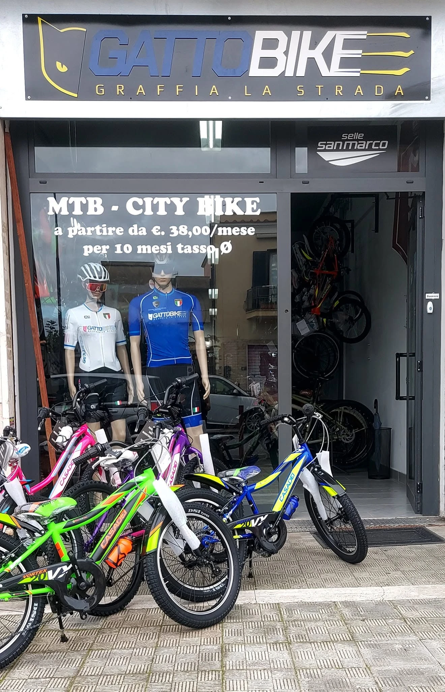

Maggio 2027 · Aprilia (LT)
L’EVENTO
Una giornata dedicata al gravel, all’incontro e al ricordo di Giancarlo Cavallin.

Gravel Carano 2027
Non contano solo i chilometri.
Conta chi pedala al tuo fianco. Conta il piacere di condividere la strada, scoprire il territorio e ritrovarsi intorno a una passione comune.
Apri posizione indicativa su Maps ↗Il 2° Memorial Giancarlo Cavallin è promosso dal Gatto Bike Team ad Aprilia, nel mese di maggio 2027.
Un territorio da vivere.
Carano, nel territorio di Aprilia, è il riferimento geografico dell’evento. Il collegamento alla Tenuta Garibaldi è orientativo: verificare il luogo esatto di partenza prima di raggiungere la manifestazione.

La nostra realtà
GATTO BIKE, OGNI GIORNO
La sede Gatto Bike è un punto di riferimento per chi ama pedalare: vendita di biciclette, manutenzione e assistenza tecnica.
Da questa passione quotidiana nasce anche l'impegno del team per il Gravel Carano e per il Memorial Giancarlo Cavallin.
Contatta Gatto Bike ↗